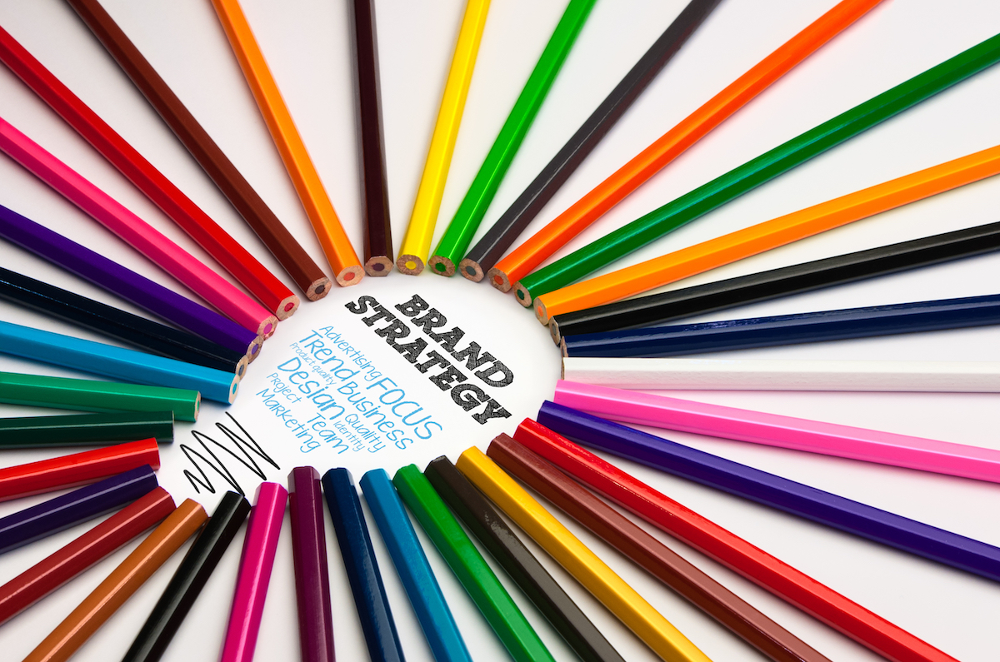

Back to Services Stack
Do you have a great product or service, but very few customers? Your problem may lie in a faulty – or nonexistent – promotional strategy. The best product in the world cannot be successful if no one knows about it. We can help you develop a compelling public persona, identify your target audience, and develop an integrated advertising strategy. Our public relations services include:
- Brand Identity & Strategy:Creating a brand involves more than coming up with a cool name or a catchy slogan. To effectively establish your position in the marketplace, you have to determine several things: What is your target demographic? Who is your competition? What makes you stand out? Once you determine your audience, you must decide how to appeal to that group. A brand should convey a particular vibe, from trustworthy and timeless to quirky and cutting edge. We will help you hammer out the answers to all these questions and develop the most effective branding strategy possible.
- Social Media Promotion:Advertising is essential to most successful businesses. In the past, this meant placing advertisements in newspapers and on television, sending mailers and even handing out fliers. These days, one of the most effective forms of promotion is taking advantage of social media networks. People are getting a growing proportion of their information from online sources, including Facebook, Twitter, Instagram and a plethora of other companies. They are not only looking for news, but also things to buy. We can help you integrate a social media strategy into your overall promotional efforts, putting your product in front of a whole new audience.
- Market Research:The main goal of any business is to identify and attract customers and provide them with a product or service they desire. While this may sound simple, properly matching up products and customers often requires a great deal of work. Having adequate data – on customers, market dynamics, competitors, etc. – can give you a major advantage. Our researchers are available to gather this data, allowing you to implement your business strategy with your eyes wide open.
- Public Relations:While advertising is important to a company’s public image, some businesses require a more involved public relations strategy. If you are a high profile operation – or are looking to raise your profile – it is wise to have a full-fledged media and community relations operation. We have years of experience working in public relations, both in the private and governmental sectors. Whether you need help creating press releases or other promotional materials, or you want intensive media training, we can help you control your public image.